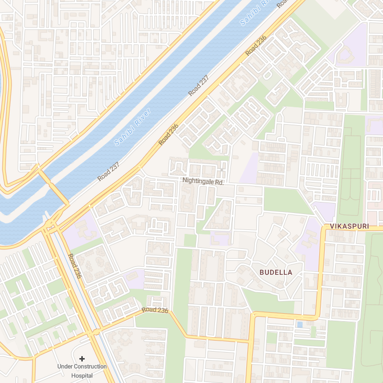

GNSS locked
Dead reckoning · inertial
Your GPS just died.
Your phone didn't.

Intelligent Navigation Beyond GNSS
Scenarios
Enter a tunnel.
Inertial sensors keep tracking.
It tells you howlost it is.
±3m
Modelled drift margin
T+0s
60 s
40 km/h · 60 s outage · modelled, not measured
Reacquiring GNSS signal
GNSS locked
GNSS comes back.
Intelligent Navigation Beyond GNSS
GatiSaarth
Intelligent Navigation Beyond GNSS
98%
Confidence
±3 m
GNSS locked
Dead reckoning · inertial
Reacquiring GNSS signal
Not the final product — new features are still being added.
Nominal GNSS lock
Real-time sensors · Vibration smooth
Outage active · pure INS
T+0s · 0.0 m travelled · ±3 m
Live position
GNSS position with dead reckoning as fallback

GNSS locked
Dead reckoning
Reacquiring GNSS
© OpenStreetMap · Stadia Maps
28.6712°N, 77.0567°E±3 m
Speed
11.1m/s
40.0 km/h
Heading
45°
Magnetometer
Position
28.6712°N
77.0567°E · GNSS fix
Accuracy
±3m
GNSS accuracy
Vehicle profile
Tunes lean and bump handling for the filter
Car
Two-wheeler
Scenarios
Simulate GNSS loss to see dead reckoning take over
Tunnel test
Urban canyon
Reset GNSS
Diagnostics
Start fullscreen navigation
Simulating a GNSS blackout — pure INS dead reckoning
Simulation cleared — back to live GNSS status